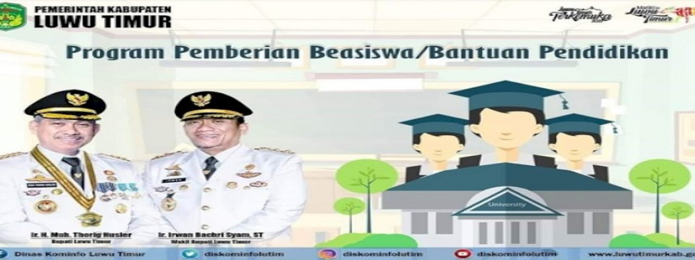

Beasiswa Luwu Timur untuk Mahasiswa D3, D4 dan S1
Kabar baik bagi masyarakat Kabupaten Luwu Timur. Saat ini Pemerintah Daerah Kabupaten Luwu Timur melalui Dinas Pendidikan Kab. Luwu Timur kembali menawarkan Program Beasiswa bagi Mahasiswa Berprestasi dan Beasiswa bagi Mahasiswa Kurang Mampu. Beasiswa Luwu Timur ini dapat diikuti oleh mahasiswa D3, D4 dan S1 yang berdomisili di Kabupaten setempat. Berikut informasi selengkapnya mengenai Beasiswa Luwu Timur.
Persyaratan Beasiswa Luwu Timur
- Merupakan dan tercatat sebagai penduduk Kabupaten Luwu Timur paling singkat 3 (tiga) tahun terakhir, dibuktikan dengan Kartu Keluarga dan Kartu Tanda Penduduk Elektronik.
- Tidak sedang mendapatkan beasiswa yang bersumber dari APBN dan APBD.
- Tidak berstatus sebagai Mahasiswa Ikatan Dinas.
- Sedang berkuliah di Perguruan Tinggi Negeri atau Perguruan Tinggi Swasta yang terakreditasi A, terakreditasi B atau terakreditasi C / terdaftar pada program D3, program D4, atau program S1.
- Terdaftar sebagai mahasiswa pada : Semester I-VI untuk Program D3, Semester I-VIII untuk Program D4/S1 atau Semester VII-VIII untuk program lanjutan dari program D3 ke S1/D4.
- Minimal telah mengikuti pendidikan di Perguruan Tinggi selama 2 semester untuk seluruh Program Pendidikan.
- Mempunyai prestasi akademik dengan ketentuan IPK berikut:
a. Untuk mahasiswa Perguruan Tinggi akreditasi A dan prodi akreditasi A,IPK minimal 2,90;
b. Untuk mahasiswa PT akreditasi A dan prodi akreditasi B, IPK minimal 3,00;
c. Untuk mahasiswa PT akreditasi A dan prodi akreditasi C/terdaftar, IPK minimal 3,10;
d. Untuk mahasiswa PT akreditasi B dan prodi akreditasi A, IPK minimal 3,00;
e. Untuk mahasiswa PT akreditasi B dan prodi akreditasi B, IPK minimal 3,10;
f. Untuk mahasiswa PT akreditasi B dan prodi akreditasi C/terdaftar, IPK minimal 3,20;
g. Untuk mahasiswa PT akreditasi C dan prodi akreditasi A, IPK minimal 3,15;
h. Untuk mahasiswa PT akreditasi C dan prodi akreditasi B, IPK minimal 3,20;
i. Untuk mahasiswa PT akreditasi C dan prodi akreditasi C/terdaftar, IPK minimal 3,30. - Pemberian Beasiswa bagi Mahasiswa Berprestasi dibayarkan setelah menjalani kuliah pada semester yang telah ditempuh.
- Khusus calon penerima Beasiswa bagi Mahasiswa Berprestasi yang diterima pada Perguruan Tinggi akreditasi A dan program studi akreditasi A atau B melalui jalur masuk SNMPTN dan SBMPTN jalur subsidi dikecualikan dari ketentuan/syarat minimal IPK, dan dapat dibayarkan mulai dari semester 1 atau setiap semester dalam setiap Tahun Anggaran.
- Selama mengikuti perkuliahan, bersedia untuk Bebas Narkoba, menaati norma agama dan etika kemasyarakatan yang berlaku dan jika melanggar maka pemberian beasiswa kepada yang bersangkutan akan dihentikan.
- Menyerahkan Surat Keterangan Masih Aktif Kuliah dari pihak kampus.
- Menyerahkan pas foto berwarna ukuran 3×4 cm sebanyak 2 (dua) lembar.
- Menyerahkan transkrip nilai sampai dengan semester genap yang ditempuh.
- Menyerahkan fotocopy rekening Bank Sulselbar atas nama mahasiswa yang bersangkutan.
- Menyerahkan fotocopy Kartu Luwu Timur Sarjana khusus bagi yang telah mendapatkan Beasiswa Kabupaten Luwu Timur dari tahun sebelumnya.
- Bagi yang berstatus famili lain pada daftar Kartu Keluarga, harus tamat pada jenjang SMA/Sederajat di Daerah (melampirkan fotocopy ijazah SMA/Sederajat).
- Batas usia penerima Beasiswa Luwu Timur adalah sebagai berikut:
a. Untuk Program D3 berusia maksimal 24 tahun
b. Untuk Program D4/S1 berusia maksimal 25 tahun
c. Untuk Porogram S1 tertentu yang mempunyai pendidikan profesi berusia maksimal 27 tahun
Cara Mendaftar:
Download tata cara mendaftar di PdfBeasiswa Top 3
-

Program Beasiswa Wardah
Bagi kamu mahasiswi semester 3 yang sedang mencari beasiswa, yuk ikuti program beasiswa berikut! Beasiswa Wardah Scholarship Program ditawarkan bagi mahasiswi semester 3 Program D4/S1 yang berkuliah di 30 Perguruan Tinggi Negeri yang bekerjasama. -

Beasiswa Jombang
Bagi kamu warga Jombang yang sedang mencari beasiswa kuliah, tawaran berikut ini bisa kamu pertimbangkan! Program Beasiswa Jombang Prestasi BAZNAS ditawarkan oleh Baznas Kabupaten Jombang bagi mahasiswa S1 PTN/PTKIN maksimal semester 5. -

Beasiswa Kemendikbud
ementerian Pendidikan dan Kebudayaan kembali menawarkan Beasiswa Unggulan Masyarakat Berprestasi bagi masyarakat Indonesia. Program ini merupakan beasiswa dalam negeri untuk mahasiswa S1, S2, dan S3.